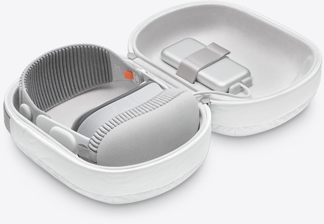

Introduction
Welcome to the era of spatial computing
Apple Vision Pro seamlessly blends
digital content with your physical space.

WATCH THE FILM
WATCH THE EVENT >

Apps
Free your desktop.
And your apps will follow.
And your apps will follow.
Your apps live in
your space.
With Vision Pro, you have an infinite canvas that transforms how you use the apps you love. Arrange apps anywhere and scale them to the perfect size, making the workspace of your dreams a reality — all while staying present in the world around you. Browse the web in Safari, create a to-do list in Notes, chat in Messages, and seamlessly move between them with a glance.
Design
Designed by Apple.
Apple Vision Pro is the result of decades of experience designing high‑performance, mobile, and wearable devices — culminating in the most ambitious product Apple has ever created. Vision Pro integrates incredibly advanced technology into an elegant, compact form, resulting in an amazing experience every time you put it on. Enclosure. A singular piece of three-dimensionally formed laminated glass flows into an aluminum alloy frame that curves to wrap around your face. Light Seal. The Light Seal
Enclosure A singular piece of three-dimensionally formed laminated glass flows into an aluminum alloy frame that curves to wrap around your face.
Light Seal. The Light Seal gently flexes to conform to your face, delivering a precise fit while blocking out stray light.
Head Band. The Head Band provides cushioning, breathability, and stretch. The Fit Dial lets you adjust Vision Pro precisely to your head.
Power. The external battery supports up to 2 hours of use, and all‑day use when plugged in.1
Sound. Speakers positioned close to your ears deliver rich Spatial Audio while keeping you aware of your surroundings.
EyeSight. An outward display reveals your eyes while wearing Vision Pro, letting others know when you are using apps or fully immersed.
A singular piece of three-dimensionally formed laminated glass acts as an optical surface for the cameras and sensors that view the world. It flows seamlessly into a custom aluminum alloy frame that gently curves to wrap around your face while serving as an attachment point for the Light Seal.

Technology
Innovation you can
see, hear, and feel.
Pushing boundaries from the inside out. Spatial experiences on Vision Pro are only possible through groundbreaking Apple technology. Displays the size of a postage stamp that deliver more pixels than a 4K TV to each eye. Incredible advances in Spatial Audio. A revolutionary dual‑chip design featuring custom Apple silicon. A sophisticated array of cameras and sensors. All the elements work together to create an unprecedented experience you have to see to believe.

More pixels than a 4K TV. For each eye.
The custom micro‑OLED display system features 23 million pixels, delivering stunning resolution and colors. And a specially designed three‑element lens creates the feeling of a display that’s everywhere you look.
Our most advanced
Spatial Audio system ever.
Dual-driver audio pods positioned next to each ear deliver personalized sound while letting you hear what’s around you. Ambient Spatial Audio makes sounds feel like they’re coming from your surroundings. And with audio raytracing, Vision Pro analyzes your room’s acoustic properties — including the physical materials — to adapt and match sound to your space.And if you want to use headphones with Apple Vision Pro, AirPods Pro 2 with USB‑C and AirPods 4 offer the perfect experience — featuring Lossless Audio with ultra-low latency, supported by the H2‑to‑H2 connection across devices.
Responsive, precision eye tracking.
A high‑performance eye‑tracking system of LEDs and infrared cameras projects invisible light patterns onto each eye. This advanced system provides ultra-precise input without you needing to hold any controllers, so you can accurately select elements just by looking at them.

A sophisticated sensor array.
A pair of high-resolution cameras transmit over one billion pixels per second to the displays so you can see the world around you clearly. The system also helps deliver precise head and hand tracking and real‑time 3D mapping, all while understanding your hand gestures from a wide range of positions.
Value
Designed to make a difference.
Our values lead the way. Apple Vision Pro was designed to help protect your privacy and keep you in control of your data. Its built‑in accessibility features are designed to work the way you do.
Explore
Apple Vision Pro
accessories.
Shop>

Use AR to view
Apple Vision Pro.
Open this page using Safari on your iPhone or iPad.

1. Testing conducted by Apple in November 2023 using preproduction Apple Vision Pro units and software. Testing consisted of full battery discharge while performing each of the following tasks: video playback, internet browsing, spatial video capture, and FaceTime. Video playback tested in conjunction with an Environment, using 2D movie content purchased from the Apple TV app. Internet browsing tested using 20 popular websites. FaceTime tested between two Apple Vision Pro units with Personas enabled. Tested with Wi-Fi associated to a network. Battery life depends on device settings, usage, network, environmental conditions, and many other factors. Battery tests are conducted using specific Apple Vision Pro units; actual results may varry.
2. Valid prescription required. Not all prescriptions are supported. Vision correction accessories are sold separately.
© 2023 TAKE-TWO INTERACTIVE SOFTWARE INC. All Rights Reserved.
© 2023 NBA Properties, Inc. All Rights Reserved. Officially Licensed Product of the National Basketball Association.
Disney+ subscription required.
Avatar: The Way of Water © 2022 20th Century Studios and TSG Entertainment Finance LLC.
Users must be 13 years or older.
Available in the U.S. on apple.com, in the Apple Store app, and at Apple Stores.
- Store
- Mac
- iPhone
- iPad
- Vision
- AirPods
- Accessories
- Gift cards
Shop and Learn
- Wallet
- Apple card
- Apple Pay
- Apple Cash
Apple wallet
- Apple One
- Apple Tv+
- Apple Music
- Apple Arcade
- Apple Podcasts
- Apple Books
- App Store
Entertainment
- accessibility
- Education
- Environment
- Privacy
- Supply Chain
- Racial Equity and justice
Apple Values
- Apple and Education
- Shop for K-12
- Shop for College
For education
More ways to shop: Find an Apple Store or other retailer near you. Or call 1-800-MY-APPLE.
Copyright © 2024 Apple Inc. All rights reserved. Privacy Policy | Terms of Use | Sales and Refunds | Legal Site Map United States